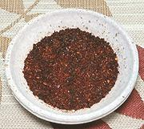

|
California Chili SprinkleCalifornia | ||||
| Makes: Effort: Sched: DoAhead: |
1/2 cup ** 20 min Yes |
This Chili Flake is flavorful and not too hot - excellent for sprinkling on pasta, vegetables, fish, meat, or whatever have you. See also Comments. | |||
|
|
12 2 2 2 |
lrg lrg lrg |
Chilis Japones Ancho Chili Chili Negro Chili Guajillo |
Make - (15 min)
|